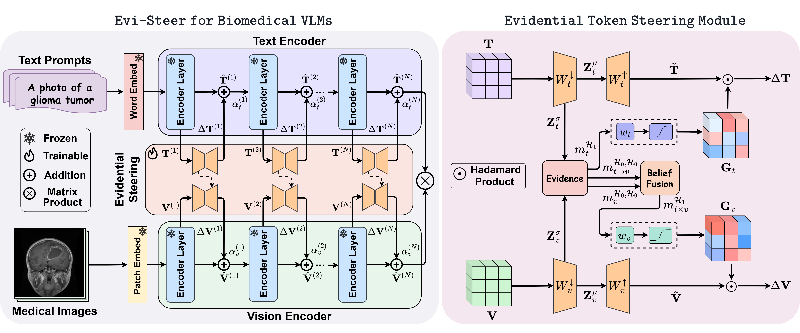

Parameter-efficient adaptation of biomedical vision-language foundation models is essential for robust multimodal understanding in low-data and shifted clinical settings. Existing adaptation methods are often deterministic and can apply residual updates even when image-text evidence is ambiguous or unreliable. We present Evi-Steer, an evidential cross-modal low-dimensional steering framework for BiomedCLIP that enables uncertainty-aware fine-tuning while updating only 0.11% of the total model parameters. Evi-Steer performs lightweight token updates in both the vision and text encoders, estimates latent-dimension epistemic uncertainty, and uses these estimates to conservatively gate residual steering. It further introduces Dempster-Shafer cross-modal confidence fusion, conditioning visual adaptation on textual confidence to suppress conflicting or uncertain updates. Across 15 biomedical imaging datasets spanning 8 organs and 8 imaging modalities, Evi-Steer improves few-shot learning and domain generalization, providing a practical pathway for reliable biomedical VLM adaptation.

Overall Evi-Steer pipeline: evidential cross-modal low-dimensional adapters generate confidence-weighted representation updates for the text and vision encoders.
Evi-Steer is evaluated in two clinically relevant settings: few-shot adaptation with K = 4, 8, and 16 labeled samples per class, and domain generalization, where models are trained with 16 shots on source datasets and tested on unseen target datasets without additional adaptation. Results below report average accuracy over three seeds.
| Method | K=4 | K=8 | K=16 |
|---|---|---|---|
| Zero-shot BiomedCLIP | – | 43.81 | – |
| CoOp | 65.52 | 72.36 | 76.26 |
| CoCoOp | 60.63 | 67.75 | 72.25 |
| KgCoOp | 65.19 | 70.74 | 72.48 |
| ProGrad | 66.33 | 71.76 | 73.98 |
| BiomedCoOp | 67.50 | 72.43 | 77.15 |
| LP++ | 65.51 | 70.85 | 75.42 |
| CLIP-Adapter | 47.11 | 48.51 | 50.60 |
| Tip-Adapter-F | 66.22 | 72.73 | 77.60 |
| GDA | 67.34 | 74.92 | 77.23 |
| CLIP-LoRA | 65.93 | 72.47 | 74.75 |
| Evi-Steer (Ours) | 71.43 | 77.33 | 81.18 |
| Method | ID | OOD | HM |
|---|---|---|---|
| Zero-shot BiomedCLIP | 58.27 | 60.65 | 59.44 |
| CoOp | 75.93 | 73.46 | 74.67 |
| CoCoOp | 74.33 | 71.32 | 72.79 |
| ProGrad | 77.05 | 73.36 | 75.16 |
| KgCoOp | 75.85 | 75.03 | 75.44 |
| GDA | 74.36 | 70.72 | 72.49 |
| CLIP-LoRA | 75.81 | 71.69 | 73.69 |
| BiomedCoOp | 76.82 | 72.30 | 74.49 |
| Evi-Steer (Ours) | 79.78 | 77.95 | 78.85 |
| Method | Breast Ultrasound | Brain MRI | ||||||
|---|---|---|---|---|---|---|---|---|
| BUSI | BUID | BUSBRA | UDIAT | BTMRI | BTMRI-P | BTMRI-S | BRISC | |
| BiomedCLIP | 59.75 | 75.00 | 66.78 | 61.54 | 56.79 | 52.80 | 55.20 | 52.60 |
| CoOp | 69.49 | 72.22 | 68.28 | 70.49 | 82.37 | 76.77 | 78.13 | 74.87 |
| CoCoOp | 70.20 | 67.59 | 66.55 | 71.54 | 78.45 | 75.43 | 76.62 | 70.20 |
| ProGrad | 71.47 | 69.44 | 67.25 | 69.23 | 82.63 | 78.00 | 79.96 | 76.27 |
| KgCoOp | 70.62 | 77.78 | 68.79 | 75.64 | 81.07 | 75.60 | 79.02 | 73.37 |
| GDA | 66.81 | 63.89 | 63.02 | 67.95 | 81.91 | 77.47 | 76.75 | 75.23 |
| CLIP-LoRA | 71.42 | 65.85 | 65.37 | 69.82 | 80.19 | 77.90 | 77.68 | 73.50 |
| BiomedCoOp | 70.34 | 67.59 | 62.90 | 71.67 | 83.30 | 77.60 | 79.52 | 74.50 |
| Evi-Steer (Ours) | 73.16 | 78.70 | 71.61 | 78.21 | 86.39 | 80.23 | 80.53 | 78.43 |
Ablations show that visual adaptation, textual adaptation, evidential updates, and cross-modal belief fusion all contribute to the final domain-generalization performance, with visual adaptation producing the largest OOD gain.
| Method | ID Acc. (%) | OOD Acc. (%) | HM Acc. (%) |
|---|---|---|---|
| Evi-Steer (Ours) | 79.79 | 77.97 | 78.87 |
| w/o Visual Adaptation | 76.23 (−3.56) | 72.25 (−5.72) | 74.19 (−4.68) |
| w/o Textual Adaptation | 78.40 (−1.39) | 76.97 (−1.00) | 77.68 (−1.19) |
| w/o Evidential Update | 79.25 (−0.54) | 76.34 (−1.63) | 77.77 (−1.10) |
| w/o Cross-modal Belief | 79.52 (−0.27) | 76.90 (−1.07) | 78.19 (−0.68) |
The layer-depth and adapter-dimension analyses further suggest that distributing lightweight adapters across more layers improves generalization, while a compact latent dimension of r = 4 provides the best harmonic-mean accuracy by balancing adaptation capacity and overfitting.
@inproceedings{koleilat2026evisteer,
title={Evi-Steer: Learning to Steer Biomedical Vision-Language Models through Efficient and Generalizable Evidential Tuning},
author={Koleilat, Taha and Rivaz, Hassan and Xiao, Yiming},
booktitle={International Conference on Medical Image Computing and Computer-Assisted Intervention},
year={2026}
}